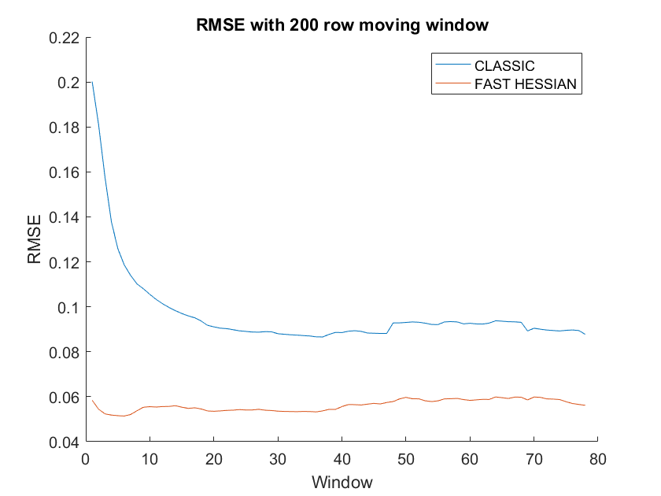
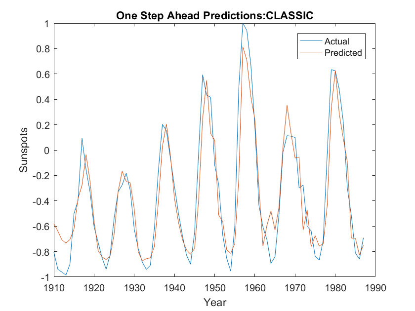
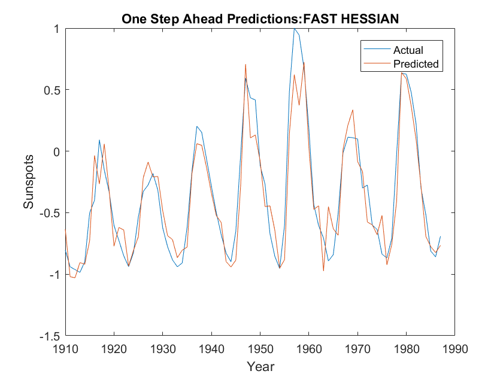
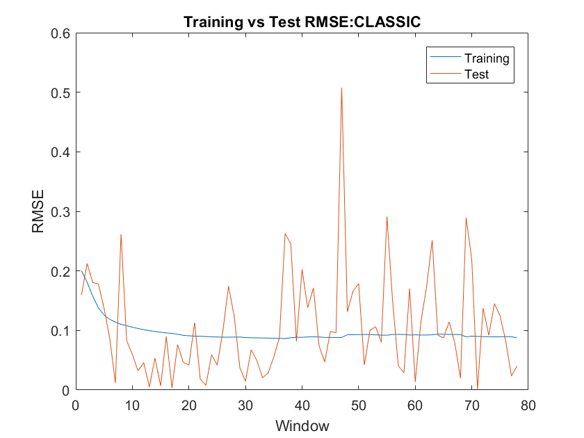
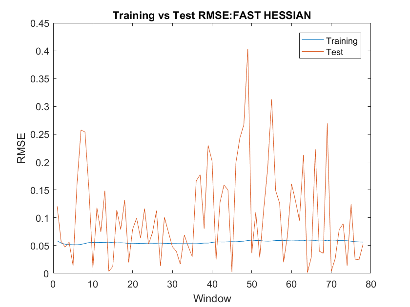

% this bit below borrowed from http://homepages.gold.ac.uk/nikolaev/MLPts.m load sunspot.dat year = sunspot(:,1); relNums = sunspot(:,2); ynrmv = mean(relNums(:)); sigy = std(relNums(:)); nrmY = relNums; ymin = min(nrmY(:)); ymax=max(nrmY(:)); relNums = 2.0*((nrmY-ymin)/(ymax-ymin)-0.5); Ss = relNums'; idim = 10; odim = length(Ss) - idim; y = zeros(1, odim); for i = 1:odim y(i) = Ss(i+idim); for j = 1:idim x(i,idim-j+1)=Ss(i-j+idim); end end patterns = x'; targets = y; % right, so we're going to apply a moving window of size 200 over our % 278 possible patterns. (The sunspots data contains 288 rows, but we're % using a 10 year lag to give us 10 inputs per pattern). So first determine % how many windows, etc, we need to apply. [numInputs, numPatterns] = size(patterns); windowSize = 200; numWindows = numPatterns - windowSize; % also set some global variables, including weights - since we'll want % to use the same starting conditions when comparing CLASSIC with % FAST_HESSIAN below. maxEpochs = 100; numHidden = 5; learnRate = 0.001; initialWeights1 = 0.5*(rand(numHidden, numInputs)-0.5); initialWeights2 = 0.5*(rand(1, numHidden)-0.5); %initialWeights1 = [0.1574,0.2029,-0.1865,0.2067,0.0662,-0.2012,-0.1108,0.0234,0.2288,0.2324,-0.1712,0.2353,0.2286,-0.0073,0.1501,-0.1791,-0.0391,0.2079,0.1461,0.2297,0.0779,-0.2321,0.1746,0.2170,0.0894,0.1289,0.1216,-0.0539,0.0777,-0.1644,0.1030,-0.2341,-0.1115,-0.2269,-0.2014,0.1617,0.0974,-0.0915,0.2251,-0.2328,-0.0306,-0.0592,0.1328,0.1476,-0.1566,-0.0051,-0.0272,0.0732,0.1047,0.1273]; %initialWeights1 = reshape(initialWeights1, 5, 10); %initialWeights2 = [-0.1120,0.0899,0.0775,-0.1687,-0.1905]; % now do the training for each of our modes modes = {'CLASSIC', 'FAST HESSIAN'}; %modes = {'CLASSIC'}; %modes = {'FAST HESSIAN'}; % set up some storage for our results, so that we can plot/tabulate % them at the end numModes = size(modes, 2); rmses = zeros(numWindows, numModes); predictions = zeros(numWindows, numModes); predictionErrors = zeros(numWindows, numModes); for i = 1:numModes mode = modes{:, i}; isFastHessian = strcmp(mode,'FAST HESSIAN') == 1; % reset initial weights weights1 = initialWeights1; weights2 = initialWeights2; % move our window of 200 patterns over the dataset for windowNum = 1:numWindows windowStart = windowNum; windowEnd = windowStart + windowSize - 1; %fprintf ('Training network on window %d:%d\n', windowStart, windowEnd) windowPatterns = patterns(:, windowStart:windowEnd); windowTargets = targets(:, windowStart:windowEnd); numEpochs = maxEpochs; %if isFastHessian % numEpochs = ceil(numEpochs / (2*windowNum)); %end for epoch = 1:numEpochs % Do the forward pass (code again lifted from MLPts.m) hiddenIn = weights1 * windowPatterns; hiddenOut = 1.0 ./ (1.0 + exp(-hiddenIn)); %hiddenOut = tanh(hiddenIn); out = weights2 * hiddenOut; error = windowTargets - out; tss = sum(sum(error.^2)); rmse = sqrt(0.5*(tss/numPatterns)); % Now do the backward pass. Following Bishop, I'm treating the % backward pass as containing two stages; firstly the calculation % of the derivatives with respect to each weight, and then % secondly the actual weight updates themselves. Note also that % the calculation of the derivatives is based on the chain rule % derivations at http://homepages.gold.ac.uk/nikolaev/311bpr.htm. % OK, let's follow the chain rule from the output node K to the weights JK. % The Jacobian comprises the partial derivatives of the output at K, with % respect to each Wjk. The gradient compirses the partial derivative of the % error at K, with respect ot each Wjk. dOkdSk = 1; % since output node is unthresholded. dSkdWjk = hiddenOut; % Xj % basically, the jacobian for each Wjk is just the hidden output. dOkdWjk = dOkdSk .* dSkdWjk; % jacobian wrt weights to output node (per epoch) % the gradient is just the error times the jacobian dEkdOk = error; dEkdWjk = dEkdOk * dOkdWjk'; % gradient wrt weights to output node (per epoch) % Now let's follow the chain rule from K down to the weights IJ. % I haven't been able to figure out how to do this using matrix % products, so am just expanding some of the matrices to enable % me to do "cell by cell" multiplication - over the entire % 50x200 results representing each Wij at each pattern. dOjdSj = (hiddenOut .* (1.0 - hiddenOut)); % derivative of sigmoid function %dOjdSj =( 1.0 - hiddenOut.^ 2); dSkdSj = (weights2' .* dOjdSj); % Wjk * Oj(1-Oj) dSkdSj = repmat(dSkdSj,10,1); % inflate for cell-by-cell multipication % inflate Xi for cell-by-cell multiplication (hey, it's quick and it works..) dSjdWij = [repmat(windowPatterns(1,:),5,1); repmat(windowPatterns(2,:),5,1); repmat(windowPatterns(3,:),5,1); repmat(windowPatterns(4,:),5,1); repmat(windowPatterns(5,:),5,1); repmat(windowPatterns(6,:),5,1); repmat(windowPatterns(7,:),5,1); repmat(windowPatterns(8,:),5,1); repmat(windowPatterns(9,:),5,1); repmat(windowPatterns(10,:),5,1)]; % See report: this is 1 * Wjk * Oj(1-Oj) * Xi, in derivation dOkdWij = dOkdSk .* dSkdSj .* dSjdWij; % jacobian wrt weights to hidden layer (per pattern) % inflate error term for cell-by-cell-multiplication dEkdOk = repmat(error, 50, 1); % See report: this is (Yk-Ok) * 1 * Wjk * Oj(1-Oj) * Xi, in derivation dEkdWij = dEkdOk .* dOkdWij; % gradient wrt weights to hidden layer (per pattern) dEkdWij = sum(dEkdWij, 2); % gradient wrt weights to hidden layer (per epoch) if isFastHessian % combine partials for Wij and Wjk to get single vector % for gradient and jacobian. (Jacobian still 55x200 at this % point; gradient is 55x1 as used matrix product eariler.) gradient = [dEkdWij', dEkdWjk]; jacobian = [dOkdWij; dOkdWjk]; % calculate / regularise our approximation to the Hessian approxHessian = jacobian * jacobian'; approxHessian = approxHessian ./ windowSize; regularisedHessian = approxHessian + (eye(length(approxHessian)) * 0.001); % use Newton's step to calculate the weight deltas gradient = gradient ./ windowSize; newtons = regularisedHessian\gradient'; deltaW1 = reshape(newtons(1:50), 5, 10); deltaW2 = newtons(51:55)'; else % fallback to CLASSIC mode % if we were going to include a momentum term, then it should go % here - as momentum is an approximation to the second order derivative, % and we shouldn't apply it to fast hessian code path. deltaW1 = learnRate * reshape(dEkdWij, 5, 10); deltaW2 = learnRate * dEkdWjk; end % Update the weights: weights2 = weights2 + deltaW2; weights1 = weights1 + deltaW1; %fprintf('Epoch %3d:\tError = %f\trmse = %f\n', epoch, tss, rmse); end % Now we want to give some info back to the code outside the loop, % so that it can plot the results. This includes making some % "one step ahead" predictions after training each window of patterns. rmses(windowNum, i) = rmse; % grab the "one step ahead" pattern and target to use predictionPattern = patterns(:,(windowEnd+1)); predictionTarget = targets(:, (windowEnd+1)); % quick application of fwd pass to determine with current weights hiddenIn = weights1 * predictionPattern; hiddenOut = 1.0 ./ (1.0 + exp(-hiddenIn)); %hiddenOut = tanh(hiddenIn); % store predicted output and error prediction = weights2 * hiddenOut; predictions(windowNum, i) = prediction; predictionError = sqrt(0.5*((prediction - predictionTarget)^2)); predictionErrors(windowNum, i) = predictionError; end end % plot / tabulate the results % training error, all modes on one plot xaxis = 1:numWindows; figure hold on for i = 1:numModes mode = modes{:, i}; plot(xaxis, rmses(:,i)); end hold off title('RMSE with 200 row moving window') xlabel('Window') ylabel('RMSE') legend(modes) % predictions vs targets, one plot for each mode xaxis = year(211:288); for i = 1:numModes mode = modes{:, i}; figure plot(xaxis, y(201:278), xaxis, predictions(:, i)) title(strcat('One Step Ahead Predictions: ', mode)) xlabel('Year') ylabel('Sunspots') legend('Actual', 'Predicted') end % training vs test error, one plot for each mode xaxis = 1:numWindows; for i = 1:numModes mode = modes{:, i}; figure plot(xaxis, rmses(:, i), xaxis, predictionErrors(:, i)) title(strcat('Training vs Test RMSE: ', mode)) xlabel('Window') ylabel('RMSE') legend('Training', 'Test') end % average training vs test error for i = 1:numModes mode = modes{:, i}; fprintf(... 'Mode: %s\t Avg Train RMSE = %f\t Avg Test RMSE = %f\n',... mode, mean(rmses(:,i)), mean(predictionErrors(:,i))) end
Mode: CLASSIC Avg Train RMSE = 0.096921 Avg Test RMSE = 0.106197 Mode: FAST HESSIAN Avg Train RMSE = 0.056183 Avg Test RMSE = 0.103676    